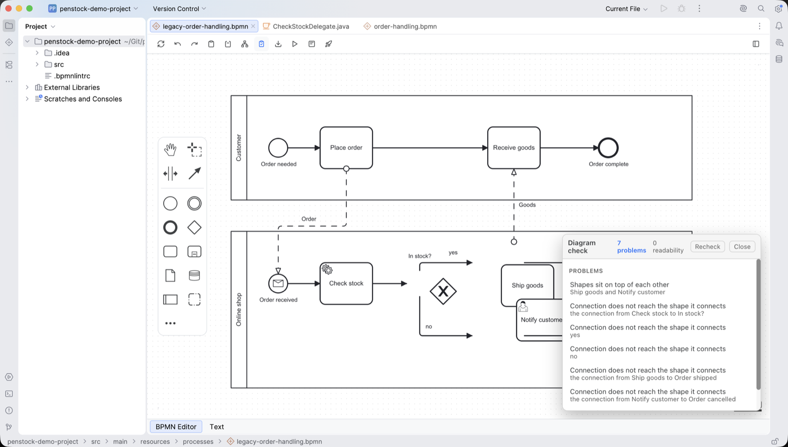
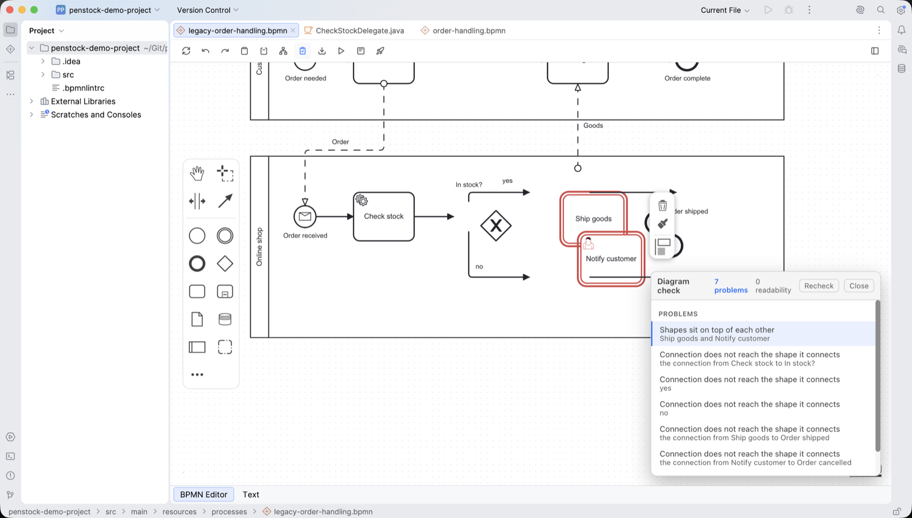

Guide / Checking
Diagram check
The check lists everything wrong with your diagram, points at each problem on the canvas, and tells you how to fix it.
Run it
- Press Check on the toolbar. A card called Diagram check opens at the bottom right of the canvas. It never pushes the canvas down.
- Read the header. It says how many problems there are, for example 3 problems, and how many readability notes.
- Click a line. The canvas scrolls to that element and selects it. Its outline turns red.
- Under the selected line, two short lines appear: Why and Fix, and a link to the page for that rule. All the pages are in Every rule.
- Fix the problem. The card updates by itself a moment after you stop editing. Recheck forces a new pass. Close puts the card and the outlines away.

What you see
While the card is open, every element that a problem is about carries a dashed outline on the canvas. Move the pointer down the list and the element under the pointer is outlined. When there is nothing wrong the card says Nothing to report across N elements and connections.

The sections of the card
The card groups findings by what they are about. A section only appears when it has something to say.
| Section | What it lists | Needs |
|---|---|---|
| How it runs | Problems in how the process runs: it can get stuck, a part runs twice, a step can never run, it may never finish, a decision has no way out. Selecting one outlines the path that leads there. See Flow analysis. | Pro |
| Problems | Drawing defects that make a diagram wrong: shapes on top of each other, a connection through a shape, a connection that does not reach its element, an element outside its pool, a boundary event off its host, labels covering each other. | Free |
| Engine | An engine mismatch with a Fix button. For example, in an Operaton project, a Camunda 7 diagram that still uses the camunda: namespace. | Free |
| Code | Where the diagram and your code disagree: a task nothing implements, a variable read under a name that is set a letter away. See Code links. | Pro |
| Rules | What bpmnlint reports. Each line has the message, the element and the rule name. See Validation. | Free |
| Migrate to Camunda 8 | What does not carry over, in a Camunda 7 diagram. See Camunda 7 to 8. | Free to look, Pro to convert |
| Readability | Collapsed by default. Crossings, lines on top of each other, detours, diagonal segments. A hand-drawn diagram always has some, so zero is not the goal. Open it when a diagram is hard to follow. | Free |
Without Pro, the card shows one line: Flow analysis found N problems in how this process runs, with a note that it is part of Pro. Press it to see how to buy or sign in.
Drawing and rules are different
The drawing checks answer "can the diagram be read?". They know nothing about the process. bpmnlint answers "is the process modelled correctly?". They never report the same thing twice.
The same check in a terminal
$ penstock check .
ok src/main/resources/approve-order.form
fail src/main/resources/order-process.bpmn
OVERLAP: approve_order <-> charge_card
DETACHED-EDGE: Flow_1 (order_received->approve_order)
note bpmnlint/no-overlapping-elements: Element overlaps with other element (approve_order)
ok src/main/resources/shipping-method.dmn
Every rule has a page with why it matters and how to fix it: https://kern0x1b.github.io/penstock-release/rulesA line that starts with note is a warning. Only errors make the command fail with exit code 1. See Every command.
Fix a whole diagram at once
If the list is long because the diagram drifted, Auto layout is usually faster than fixing line by line. The check measures. Auto layout draws a diagram that passes.
What it cannot see
Three measures need the file rather than the canvas: a connection declared in the XML that was never drawn, a connection with an end missing, and a comparison of what the diagram meant before an operation against after. The card leaves those out instead of reporting them as passing.
Common problems
- The card says "The bpmnlint rules could not run".
- Your
.bpmnlintrcuses rules from a plugin. The editor needs those rules in a bundle. See Validation. - I fixed a problem and it is still listed.
- Press Recheck. The list refreshes a moment after you stop editing.
- The count in the header is lower than the list.
- Warnings and readability notes are not counted as problems. Only errors are.
- There is no Check button.
- It may have been moved off the bar. Open More and pin Check. See The toolbar and the More menu.